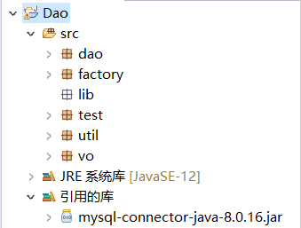
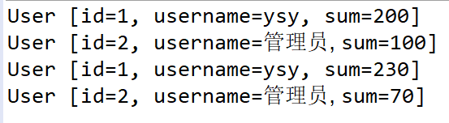
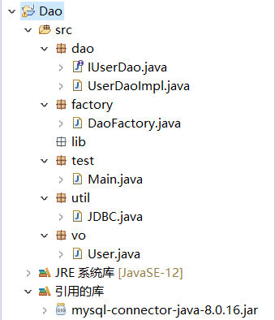

原文连接:https://www.cnblogs.com/ysyasd/p/11941423.html
一、什么是Dao设计模式
Dao设计模式封装了操作具体数据库的细节，对业务层提供操作数据库的接口，因此降低了业务层代码与具体数据库之间的耦合，有利于人员分工，增加了程序的可移植性。
Dao设计模式中主要包含这5个模块：
1、VO类：VO（Value Object）即值对象，每一个值对象对应一张数据库表，便于我们传递数据。
2、Dao接口：Dao接口定义了操作数据库的方法，业务层通过调用这些方法来操作数据库。
3、Dao实现类：操作数据库的方法的具体实现，封装了操作数据库的细节。
4、Dao工厂类：用于代替new操作，进一步降低业务层与数据层之间的耦合。
5、数据库连接类：封装了连接数据库、关闭数据库等常用的操作，减少重复编码。
下面我们应用Dao设计模式来实现一个简单的转账操作，加深对其的理解。
二、Dao设计模式实现
首先，我们创建vo、dao、factory、util包来分别存放Dao设计模式5个模块的代码。因为我们使用的是JDBC连接MySQL数据库，所以还需要创建一个lib包存放并引用JDBC驱动。除此之外，我们还需要创建一个test包进行代码的测试。创建好后的目录结构如下：

接着设计一张user表，表中包含了用户基本信息和余额，并插入一些数据。

根据user表在vo包中创建VO类user.java。
1 package vo;
2
3 public class User {
4
5 private int id;
6
7 private String username;
8
9 private int sum;
10
11 public int getId() {
12 return id;
13 }
14
15 public void setId(int id) {
16 this.id = id;
17 }
18
19 public String getUsername() {
20 return username;
21 }
22
23 public void setUsername(String username) {
24 this.username = username;
25 }
26
27 public int getSum() {
28 return sum;
29 }
30
31 public void setSum(int sum) {
32 this.sum = sum;
33 }
34
35 @Override
36 public String toString() {
37 return "User [id=" + id + ", username=" + username + ", sum=" + sum + "]";
38 }
39
40 }在util包中创建数据库连接类JDBC.java。
1 package util;
2
3 import java.sql.Connection;
4 import java.sql.DriverManager;
5 import java.sql.ResultSet;
6 import java.sql.SQLException;
7 import java.sql.Statement;
8
9 public class JDBC {
10 //获取数据库链接
11 public static Connection getConnection() {
12 Connection con = null;
13 try {
14 String url = "jdbc:mysql://localhost:3306/user?serverTimezone=Asia/Shanghai";
15 Class.forName("com.mysql.cj.jdbc.Driver");
16 con = DriverManager.getConnection(url, "root", "root");
17 } catch (Exception e) {
18 e.printStackTrace();
19 }
20 return con;
21 }
22 //关闭资源
23 public static void close(Connection con, Statement st, ResultSet rs) {
24 try {
25 if (rs != null) {
26 rs.close();
27 }
28 if (st != null) {
29 st.close();
30 }
31 if (con != null) {
32 con.close();
33 }
34 } catch (SQLException e) {
35 e.printStackTrace();
36 }
37 }
38 }经过分析，该转账系统需要两类数据库操作，分别是“查询用户信息”和“更新用户余额”。因此我们在dao包中创建IUserDao.java接口并定义这两种方法。
1 package dao;
2
3 import java.sql.Connection;
4 import java.sql.SQLException;
5
6 import vo.User;
7
8 public interface IUserDao {
9 //根据用户名查找用户信息
10 public User selectUserByName(Connection con, User user);
11 //根据用户名更新用户余额
12 public int updateSumByName(Connection con, User user) throws SQLException;
13 }接着在dao包中创建该接口的实现类UserDaoImpl.java，实现这两种方法。
1 package dao;
2
3 import java.sql.Connection;
4 import java.sql.PreparedStatement;
5 import java.sql.ResultSet;
6 import java.sql.SQLException;
7
8 import util.JDBC;
9 import vo.User;
10
11 public class UserDaoImpl implements IUserDao {
12
13 @Override
14 public User selectUserByName(Connection con, User user) {
15 String sql = "select * from user where username = ?";
16 PreparedStatement pStatement = null;
17 ResultSet rs = null;
18 try {
19 pStatement = con.prepareStatement(sql);
20 pStatement.setString(1, user.getUsername());
21 rs = pStatement.executeQuery();
22 if (rs.next()) {
23 user.setId(rs.getInt("id"));
24 user.setUsername(rs.getString("username"));
25 user.setSum(rs.getInt("sum"));
26 return user;
27 }
28 } catch (SQLException e) {
29 e.printStackTrace();
30 }finally {
31 JDBC.close(null, pStatement, rs);
32 }
33 return null;
34 }
35
36 @Override
37 public int updateSumByName(Connection con, User user) throws SQLException {
38 String sql = "update user set sum = ? where username = ?";
39 PreparedStatement pStatement = null;
40 try {
41 pStatement = con.prepareStatement(sql);
42 pStatement.setInt(1, user.getSum());
43 pStatement.setString(2, user.getUsername());
44 return pStatement.executeUpdate();
45 } catch (SQLException e) {
46 e.printStackTrace();
47 //抛出异常，便于进行事务处理
48 throw e;
49 }finally {
50 JDBC.close(null, pStatement, null);
51 }
52 }
53 }最后，我们还需要在factory包中创建Dao工厂类DaoFactory.java。
1 package factory;
2
3 import dao.IUserDao;
4 import dao.UserDaoImpl;
5
6 public class DaoFactory {
7 public static IUserDao getUserDao() {
8 return new UserDaoImpl();
9 }
10 }到这里，转账系统的Dao层就设计好了。我们在test包中创建Main.java进行测试。
1 package test;
2
3 import java.sql.Connection;
4 import java.sql.SQLException;
5
6 import dao.IUserDao;
7 import factory.DaoFactory;
8 import util.JDBC;
9 import vo.User;
10
11 public class Main {
12
13 public static void main(String[] args) {
14 Connection con = JDBC.getConnection();
15 IUserDao userDao = DaoFactory.getUserDao();
16 //被转账的用户
17 User user_in = new User();
18 user_in.setUsername("ysy");
19 user_in = userDao.selectUserByName(con, user_in);
20 System.out.println(user_in);
21 //转账的用户
22 User user_out = new User();
23 user_out.setUsername("管理员");
24 user_out = userDao.selectUserByName(con, user_out);
25 System.out.println(user_out);
26 //转账30元
27 user_in.setSum(user_in.getSum() + 30);
28 user_out.setSum(user_out.getSum() - 30);
29 //事务处理
30 try {
31 con.setAutoCommit(false);
32 userDao.updateSumByName(con, user_in);
33 userDao.updateSumByName(con, user_out);
34 con.commit();
35 } catch (Exception e) {
36 e.printStackTrace();
37 try {
38 con.rollback();
39 } catch (SQLException e1) {
40 e1.printStackTrace();
41 }
42 }
43 //查询转账结果
44 user_in = userDao.selectUserByName(con, user_in);
45 System.out.println(user_in);
46 user_out = userDao.selectUserByName(con, user_out);
47 System.out.println(user_out);
48 JDBC.close(con, null, null);
49 }
50 }执行结果如下：

最终的目录结构如下：
